Как читать авторский курс и нормативные материалы
Это учебные материалы, а не заключение о соответствии конкретного продукта. Организационные модели курса отделяйте от терминов стандарта: ППК в опубликованном проекте — машиночитаемый перечень, а живой реестр его версий является практикой сопровождения. Термин OSA в разных материалах имеет разный охват. Статус и обязательность нормативного документа проверяются отдельно; проект КАПО опубликован как проект первой редакции.
Конспект: Лицензионная чистота и юридический workflow
Зачем модуль
Лицензионный дефект устроен иначе, чем уязвимость. Уязвимость закрывается обновлением версии — лицензия же определяет условия, на которых компонент вообще разрешено включать в продукт и распространять. Если в проприетарную поставку Организации попала зависимость под GPL-3.0-only или AGPL-3.0, это не «обновим и забудем»: при определённых сценариях распространения это требование раскрыть исходный код всего производного произведения. Такой дефект не виден сканеру уязвимостей и не имеет CVSS — его ловит только разбор лицензий.
Второй драйвер — поставки от соисполнителей. Организация принимает SBOM, собранные чужими руками и инструментами, и в полях licenses приходит зоопарк: аккуратный SPDX-идентификатор, свободный текст BSD-like, либо пусто или NOASSERTION. Этот модуль превращает такой ввод в управляемые решения.
Ключевые идеи
SPDX-выражение — это не строка, а грамматика. SPDX License List даёт каноничные идентификаторы (MIT, Apache-2.0, GPL-2.0-or-later), а SPDX License Expression позволяет их комбинировать операторами: (MIT OR Apache-2.0) — выбор, Apache-2.0 AND MIT — оба обязательства одновременно, GPL-2.0-only WITH Classpath-exception-2.0 — лицензия с исключением. Дисциплина: GPL-2.0 устарел, корректно GPL-2.0-only либо GPL-2.0-or-later — разница в том, можно ли перейти на GPL-3.0, и это меняет вердикт.
Классы важнее конкретных имён. Лицензий сотни, но обязательства сводятся к четырём поведенческим классам:
| Класс | Примеры | Главное обязательство при распространении | Триггер copyleft |
|---|---|---|---|
| Permissive | MIT, BSD-3-Clause, Apache-2.0 | сохранить текст лицензии и атрибуцию; Apache-2.0 даёт патентный грант | нет |
| Weak copyleft | LGPL-3.0, MPL-2.0 | открыть изменения самого компонента | пофайлово (MPL) / при статической линковке (LGPL) |
| Strong copyleft | GPL-2.0-only, GPL-3.0-only | открыть весь производный продукт | линковка в одно произведение |
| Network copyleft | AGPL-3.0 | открыть исходники даже при использовании по сети (SaaS) | сетевое взаимодействие |
Совместимость — это направленный граф, а не симметрия. Код под Apache-2.0 можно включить в GPL-3.0-проект, но не наоборот; Apache-2.0 несовместим с GPL-2.0-only из-за патентных оговорок. Поэтому «в продукте есть и MIT, и GPL» само по себе не нарушение — нарушением становится конкретный способ объединения.
Самый дорогой риск — NOASSERTION и проприетарщина. Пустая или нераспознанная лицензия опаснее «плохой, но понятной»: пока класс неизвестен, вердикт дать нельзя, а значит компонент юридически не готов к выпуску. Отраслевые обзоры широкоиспользуемого FOSS показывают, что лицензионные и идентификационные данные у части популярных пакетов неполны — то есть NOASSERTION это не редкость, а массовое явление, требующее процедуры доразметки.
Слепая зона: линковка и способ распространения Класс copyleft срабатывает не от факта наличия библиотеки, а от способа её использования. LGPL при динамической линковке ведёт себя мягко, при статической — жёстче. AGPL не трогает того, кто гоняет софт у себя в закрытом контуре, но «выстреливает», как только продукт становится сетевым сервисом для внешних пользователей. Один и тот же
purlдаёт разный вердикт в зависимости от архитектуры продукта — поэтому вердикт нельзя вынести по одной строке лицензии без контекста поставки.
Как выглядит на практике
Цепочка обработки в сервисе аудита/вердиктов: evidence → нормализация → вердикт → заключение/риск.

Фрагмент CycloneDX, где видны обе стороны — исходная строка как evidence и нормализованное выражение:
{
"name": "somelib", "version": "2.4.1",
"purl": "pkg:npm/somelib@2.4.1",
"licenses": [
{ "expression": "MIT OR Apache-2.0" }
],
"evidence": {
"licenses": [
{ "license": { "name": "BSD-like (raw from header)" } }
]
}
}
Здесь expression — нормализованный факт для политики, а evidence.licenses хранит сырьё, на котором этот факт основан: при споре аудитор видит, откуда взялось решение.
Слепые зоны именно этой темы
- Лицензия проекта ≠ лицензия файла. Репозиторий заявляет MIT, а внутри лежит файл под GPL — посборочный детектор (ScanCode) это поймает, метаданные пакета — нет.
- Dual licensing читают неверно.
MIT OR GPL-2.0означает «выбери одну», а не «обе действуют» — при ошибке выбора Организация добровольно берёт на себя лишние copyleft-обязательства. LicenseRef-*и кастомные тексты не входят в SPDX List и требуют ручного заключения — автоматика их пропускает.- Транзитивные зависимости под copyleft опаснее прямых: их редко смотрят глазами, а вердикт нужен и им.
Связь с нормативкой
- SPDX ISO/IEC 5962 — формат выражений и License List как машинный словарь.
- OpenChain ISO/IEC 5230 — требует задокументированного процесса license compliance, а не разовой проверки.
- ISO/IEC 27001 A.5/A.8 — управление активами и compliance как часть СУИБ.
- Шаблоны: Политика лицензионной чистоты · Порядок работы с неизвестной лицензией.
Что уносим в работу
- Храните по каждой лицензии две сущности: исходную строку (evidence) и нормализованное SPDX-выражение — см. П26. Лицензионная классификация.
- Классифицируйте не имена, а поведение: permissive / weak / strong / network copyleft + проприетарная + unknown.
- Вердикт выносите с учётом способа распространения и линковки, а не по одной строке.
NOASSERTION— это не «зелёный», а отдельная очередь на доразметку с ответственным.- Каждый copyleft- и unknown-кейс доводите до записи в реестре с автором, датой и сроком пересмотра — П27. Юридическое заключение и реестр лицензий, П30. Исключения и принятие риска; для глубокого детекта — П11. ScanCode для лицензий и П12. ORT и license policy.